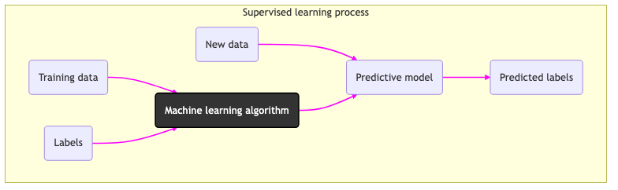
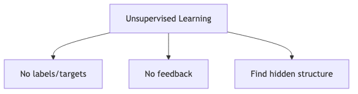
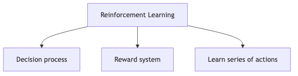

Machine Learning with PyTorch and Scikit-Learn: Develop machine learning and deep learning models with Python by Sebastian Raschka (Author), Yuxi (Hayden) Liu (Author), Vahid Mirjalili (Author)
Table of Contents
1. Index
- The books is https://www.amazon.com/Machine-Learning-PyTorch-Scikit-Learn-learning/dp/1801819319
- All code examples are available for download through GitHub at https://github.com/rasbt/machine-learning-book.
- We also have other code bundles from our rich catalog of books and videos available at https://github.com/PacktPublishing/.
2. Intro
- In 2006, Geoffrey Hinton et al. published a paper showing how to train a deep neural network capable of recognizing handwritten digits with state-ofthe-art precision (>98%). (Hinton, Geoffrey E., Simon Osindero, and Yee-Whye Teh. “A Fast Learning Algorithm for Deep Belief Nets.” Neural Computation 18, no. 7 (July 2006): 1527–54. https://doi.org/10.1162/neco.2006.18.7.1527 .) See here
- They named this technique as "deep learning"
- Training a deep neural net was widely considered impossible at the time, and most researchers had abandoned the idea in the late 1990s. This paper revived the interest of the scientific community, and before long many new papers demonstrated that deep learning was not only possible, but capable of mind-blowing achievements that no other machine learning (ML) technique could hope to match (with the help of tremendous computing power and great amounts of data). This enthusiasm soon extended to many other areas of machine learning.
3. Chapter 1: Giving computers the Ability to Learn from the Data
- Machine learning is ability to learn from data
- Three different types of machine learning:
- Supervised Learning
- Labeled Data
- Direct Feedback
- Predict outcome/future
- Unsupervised Learnning
- No labels/targets
- No feedback
- Find hidden structure in data
- Reinforcement Learning
- Decision process
- Reward system
- Learn series of actions
- Supervised Learning
3.1. Supervised Learning:
- The main goal in supervised learning is to learn a model from labeled training data that allows us to make predictions about unseen or future data.
“supervised” refers to a set of training examples(data inputs) where the desired output signals (labels) are already known

3.1.1. Regression
3.1.2. Classification


